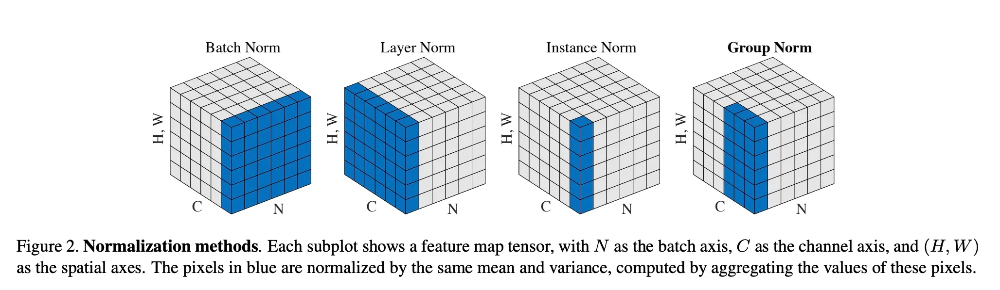
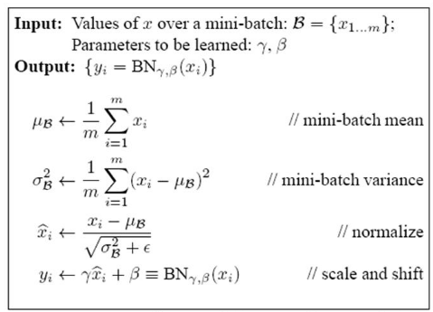
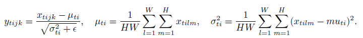
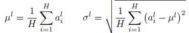
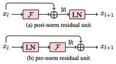
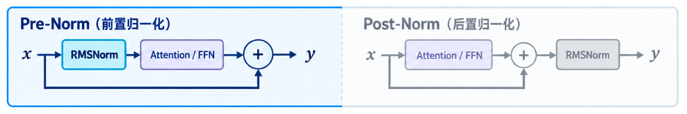
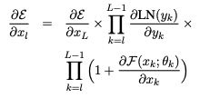
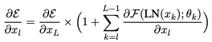
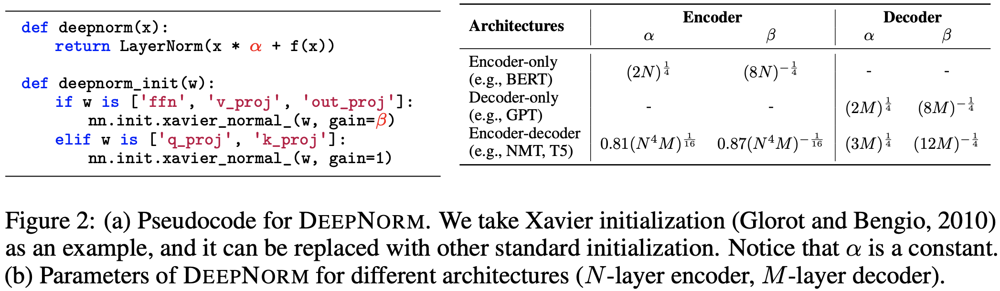

大模型常用的Normalization
Normalization的意义
Normalization就是将输入的数据进行归一化，使其服从均值为 0， 方差为 1 的分布。这样使得输入具有相同的均值和方差，固定了每一层的输入分布，从而加速网络的收敛。具体的作用如下：
- 缓解梯度消失，可以对学习率进行调整。
- 网络更稳定，Normalization可以抑制参数微小变化为深度网络带来值方法的问题。
- 不容易过拟合，替代Dropout或少用Dropout，可以减少L2正则化的权重。
小模型的正则化

Batch Normalization(https://arxiv.org/abs/1502.03167)
主要解决“Internal Covariate Shift”问题（对于深度网络结构，在训练过程中，因为各层参数不停在变化，所以每个隐层都会面临covariate shift的问题，也就是在训练过程中，隐层的输入分布会不断变化，不够稳定。），BN具体的操作流程如下：

BN的推理计算
在推理（inference）的过程中，输入一个实例，看不到Mini-Batch其它实例，那么进行BN计算呢？一个实例是没法算实例集合求出的均值和方差的。因此，在推理的时候用全局统计量即可：
\(E[x] \leftarrow E_B[\mu_B]\)
\(Var[x] \leftarrow \frac{m}{m-1}E_B[\delta_B^2]\)
在计算整个训练集的均值和方差的值时，一般是在训练的同时用移动平均计算得到，其平滑系数取0.99。再进行缩放计算：
\(y=\frac{\gamma}{\sqrt{Var[x]+\epsilon}}·x+(\beta-\frac{\gamma · E[X]}{\sqrt{Var[x]+\epsilon}})\)
BN的好处
- 极大提升了训练速度，加快Loss收敛；
- 能增加分类效果，一种解释是这是类似于Dropout的一种防止过拟合的正则化表达方式，所以不用Dropout也能达到相当的效果；
- 调参过程更简单多，对初始化要求没那么高，而且可以使用大的学习率等。
Instance Normalization(https://arxiv.org/abs/1607.08022)
主要面向图像风格化任务中提出，主要对数据的\((H,W)\)做归一化（假设数据维度为[B, H, W, C]），以实现模型加速收敛，并保持每个图像实例之间独立。

Layer Normalization(https://arxiv.org/abs/1607.06450v1)
LN是针对深度网络的某一层的所有神经元（即特征维度）的输入按以下公式进行normalize操作，对batch的大小和输入深度没有限制（LN中同层神经元输入拥有相同的均值和方差，不同的输入样本有不同的均值和方差）。其计算方式如下：

再和BN的方式一致，进行normalize和重新缩放。
LN保持了一个样本间特征之间的大小关系，抹掉了样本间的大小关系，不依赖batch size，因此适合序列型任务，比如NPL领域，因此在LLMs方面用的多。
Group Normalization(https://arxiv.org/abs/1803.08494)
GN是针对BN在batch size较小时错误率较高而提出的改进算法，因为BN层的计算结果依赖当前 batch 的数据，当 batch size较小时（比如2、4这样），该 batch 数据的均值和方差的代表性较差，因此对最后的结果影响也较大。GN根据通道进行分组，然后在每个组内做归一化，计算其均值和方差，从而不受批次中样本数量的约束。这里将通道分为G组，G是一个超参数，通常默认为32。实现方式如下：
def GroupNorm(x, gamma, beta, G=32):
# x_shape:[B, C, H, W]
results = 0.
eps = 1e-5
x = np.reshape(x, (x.shape[0], G, x.shape[1]/G, x.shape[2], x.shape[3]))
x_mean = np.mean(x, axis=(2, 3, 4), keepdims=True)
x_var = np.var(x, axis=(2, 3, 4), keepdims=True0)
x_normalized = (x - x_mean) / np.sqrt(x_var + eps)
results = gamma * x_normalized + beta
return results
Post-Norm和Pre-Norm(https://arxiv.org/abs/1906.01787)
在Transformer结构中，传统做法是在残差之后(Add操作之后)使用normalize，这种方式叫post-norm。而论文中提出了pre-norm，将normalize放在残差之前，如下图所示。


Post-Norm: \(x_{l+1}=LN(x_l+F(x_l;\theta_l))\)
Pre-Norm: \(x_{l+1}=x_l+F(LN(x_l);\theta_l)\)
结论：(1)post-norm在残差之后做归一化，对参数正则化的效果更强，模型收敛速度更快；(2)pre-norm相对于post-norm，部分参数直接加在了后面，不需要对这部分参数进行正则化，正好可以防止模型的梯度爆炸或者梯度消失，因此结论是如果层数少post-norm的效果其实要好一些，如果要把层数更深，pre-norm显然更好。
为什么pre-norm可以保证更深的网络训练稳定？


对Post-Norm（上式1）和Pre-Norm（上式2）的反向传播进行对比，对于pre-norm，式中的1就保证了反向传播的梯度出现连乘的现象也不会梯度消除或者爆炸，一部分梯度是直接从上一层得到的。
为什么Normalize不在激活函数F之后？
因为在做完Normalization之后的数据不能和原始输入数据加在一起，如果这样做的话残差中从上一层出来的信息会占很大比重，这显然并不合理。
大模型常用的Normalization方法
主流大模型使用的Normalization主要有三类，分别是Layer-Norm，RMS-Norm和Deep-Norm。其中Layer-Norm在上面已经进行了分析。下面主要对RMS-Norm和Deep-Norm进行详细的说明。
RMS-Norm(https://arxiv.org/abs/1910.07467)
RMS-Norm是对Layer-Norm的一个改进，没有做re-center操作（移除了其中的均值项），可以看作LayerNorm在均值为0时的一个特例。
论文通过实验证明，re-center操作不重要。RMS-Norm 也是一种标准化方法，但与 LayerNorm 不同，它不是使用整个样本的均值和方差，而是使用平方根的均值来归一化，这样做可以降低噪声的影响。其与LN的对比如下：
\(y=\frac{x-E(x)}{\sqrt{Var(x)+\epsilon}} * \gamma + \beta \rightarrow \hat{x}_i=\frac{x_i}{RMS(x)} g_i, \ where \ RMS(a)=\sqrt{\frac{1}{n}\sum_{i=1}{^n}a_i^2}\)
Deep-Norm(https://arxiv.org/abs/2203.00555)
基于 post-norm 连接（Post-LN），pre-norm 残差连接（Pre-LN）能够提升 Transformer 的稳定性。但是，Pre-LN在底层的梯度往往大于顶层，因而导致与Post-LN相比性能下降。因此，为使多达数百层的Transformer模型训练实现稳定化，在残差连接处引入了一个新的归一化函数——DeepNorm，对LN进行了改进，最终该方法提升了Transformer模型的稳定性，并实现了将模型深度扩展到了1000多层。DeepNorm的公式如下：
\(x_{l+1}=LN(\alpha x_l+G_l(x_l;\theta_l))\)
其中，\(\alpha\)是一个常数，\(G_l(x_l , \theta_l)\)是参数为\(\theta_l\)的第\(l\)个Transformer子层（即注意力或前馈网络）的函数。DeepNet还将残差内部的权重\(\theta_l\)扩展了\(\beta\)。其DeepNorm伪代码，\(\alpha\)和\(\beta\)的取值参考如下：

与 Post-LN 相比，DeepNorm在执行LN之前会放大残差连接。此外，在初始化期间会缩小权重。值得注意的是，作者仅缩放前馈网络的权重以及注意层的值投影和输出投影。此外，残差连接和初始化的规模取决于网络中Encoder和Decoder的层数。